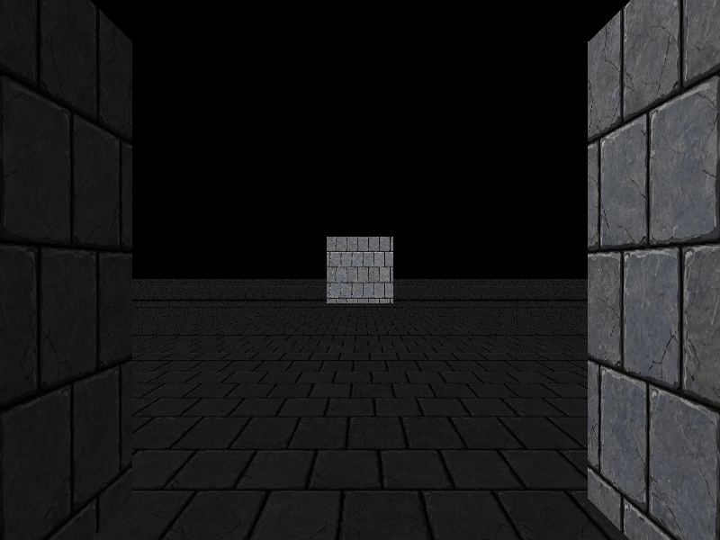
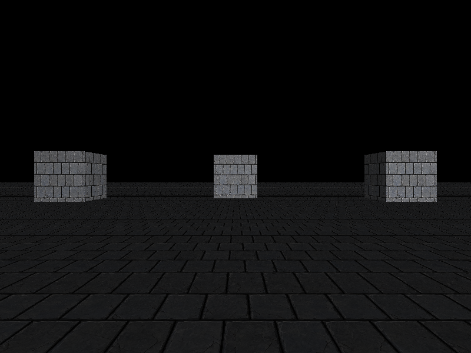
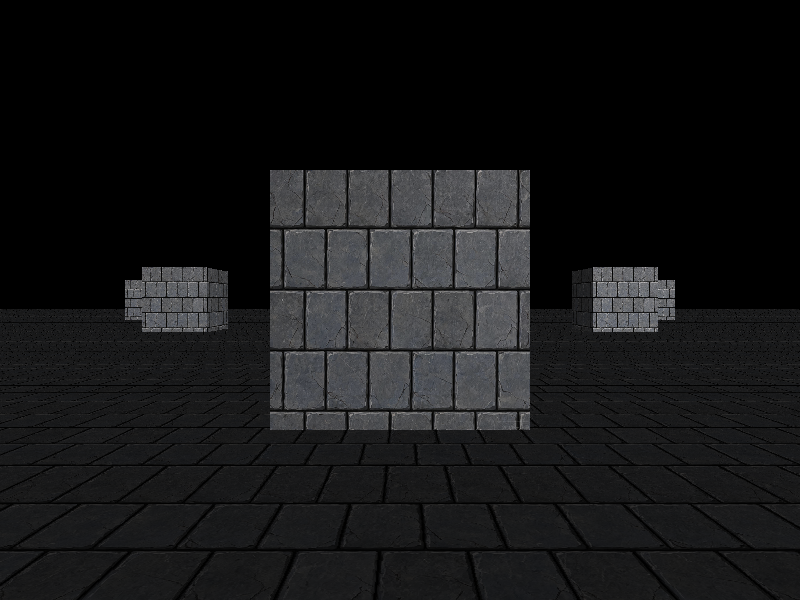

剔除和裁剪：不画看不见的东西，也画得出该看见的东西
第 10 步把立方体和地板贴上了棋盘格，但留了个尾巴：地板不敢铺大，相机一贴脸就有三角形飞出去。第 11 步按「从易到难」补齐三个机制 —— 背面剔除、视锥剔除、近平面裁剪。
每个新词第一次出现时先解释清楚，再用。插图全部是内联 SVG 手绘，不依赖任何库；对照截图是程序真实渲染出来的，不是示意图。
三个机制里，裁剪是核心，第二部分（尤其是「为什么天生透视正确」）值得慢读。第四部分是一个真实 bug 的完整记录 —— 那是这篇文档里最值钱的东西。
01背面剔除（最省事）
1.1 立方体永远有一半你看不见
一个立方体 12 个三角形。不管从哪个角度看，永远有 6 个是背对你的 —— 它们的正面对着墙的另一侧。
既然看不见，就别画。这一刀在填像素之前砍掉，等于白省一半的填充开销，而且只需要几行整数加法，不需要任何额外状态（不像深度测试那样还要一张深度图）。三个机制里它最简单，所以排第一个。
1.2 怎么判正反：屏幕空间的有向面积
把三角形的三个屏幕坐标拿来，算：
area2 = (x1 - x0) * (y2 - y0) - (x2 - x0) * (y1 - y0)这是有向面积的两倍，符号代表绕序。本项目的判据是：
判据屏幕坐标 x 向右、y 向下时，正面朝你的三角形，area2 > 0。
area2 的符号就翻转。左边（area2 > 0）是正面、保留；右边（area2 < 0）是背面、丢弃。area2 == 0（三点共线）也当背面丢掉 —— 反正画不出东西。1.3 一个必须记牢的坑：CW 还是 CCW？
学图形学时你会看到两种说法，第一次一定会被绕晕：
| 说法 | 前提 | 正面绕序 |
|---|---|---|
| OpenGL 默认 | 窗口坐标 y 向上 | 逆时针（CCW） |
| 本项目（屏幕 y 向下） | 屏幕坐标 y 向下 | 看起来是顺时针（CW） |
它们是同一个绕序，只是坐标轴朝向反了，符号跟着反。「CW / CCW」这种说法本身不自足 —— 必须带上「哪个坐标轴朝哪」才有意义。
所以更省事、更不会记错的写法是直接说符号：屏幕 y 向下时，正面 area2 > 0。学到这一步最容易犯的错，是把顶点按「屏幕上看起来顺时针」去写 —— 坐标系一换，整套模型整体消失。
back_facing 里 area2 == 0 也算背面（写成 <= 0）。三点重合或共线时画不出东西，一并扔掉正好。
1.4 为什么必须在「投影之后」判
area2 用的是屏幕坐标，也就是顶点做完 MVP、透视除法、视口变换之后的整数像素坐标。不能在世界空间用叉积判正反 —— 世界空间的法线方向判断不了「相机在面的哪一侧」。
投影这一步把「面朝不朝相机」压缩进了屏幕上的绕序符号里，所以判正反只需要看面积符号。这就是它在管线里的位置：
02近平面裁剪（最难）
第 10 步那个「地板不能铺大」的坑，根源就在这里。先看现象，再看原理。
2.1 为什么必须做
透视除法要除以 w。而 w 的正负号代表「在相机前面还是后面」。相机背后的点 w ≤ 0，除完 x、y 会整块翻号 —— 一个本来在左边的点，除完跑到右边去，屏幕上就出现横穿全屏的鬼畜三角形。
第 10 步的偷懒办法是「w 太小的顶点直接丢掉，用到它的三角形整块不画」。代价就是地板铺到 12×12 时，角点跑到相机背后 → 含这个角的两个三角形全没了 → 地板缺一块。
正确的做法：不是丢顶点，是把跨过近平面的三角形切开，切掉相机背后那一半，保留前面那一半。
2.2 关键：在透视除法 之前 做
管线顺序是：
顶点变换（乘 MVP，仍是齐次坐标）→ 【近平面裁剪】→ 透视除法 → 视口 → 光栅化裁剪必须在透视除法之前。因为裁剪要处理的，正是「w ≤ 0」这些点；而一旦除了 w，坐标已经翻了号，信息就丢了。
clip = MVP · p，没有除法），所以在裁剪空间切一刀，切完的碎片天生就是透视正确的。2.3 近平面怎么判：z + w ≥ 0
透视投影矩阵把近平面映射到 NDC 的 z = -1。而 NDC.z = clip.z / clip.w，所以近平面就是 clip.z / clip.w = -1，也就是 clip.z = -clip.w，即：
clip.z + clip.w = 0 ← 近平面
z + w ≥ 0 → 在近平面内侧（保留）
z + w < 0 → 在近平面外侧（丢掉）正交投影同样成立：正交时 w 恒为 1，近平面是 z = -1，于是 z + 1 = 0。
w 一定 > 0。2.4 Sutherland-Hodgman：沿着边走一圈
算法一句话版本：沿着多边形的边走一圈，对每条边 (cur → nxt) 问两件事：
cur在平面内侧吗？在就把它留下来。- 这条边跨过平面了吗？跨了就补一个交点。
对三角形来说，切一刀的结果只可能是三种：空（全在外）、三角形（全在内）、或者四边形（一个角被切掉）。所以临时数组开 4 个位置就够。
for (int i = 0; i < 3; ++i) {
const ClipVertex& cur = in[i];
const ClipVertex& nxt = in[(i + 1) % 3];
const float d_cur = plane_distance(cur); // z + w
const float d_nxt = plane_distance(nxt);
const bool cur_in = (d_cur >= 0.0f);
if (cur_in) poly[count++] = cur; // ① 在内侧 → 留下
if (cur_in != (d_nxt >= 0.0f)) { // ② 一内一外 → 补交点
const float t = d_cur / (d_cur - d_nxt); // 令 d(t) = 0 解出 t
poly[count++] = lerp_vertex(cur, nxt, t);
}
}交点的 t 怎么来的：平面函数 d 沿边是线性的，d(t) = d_cur + t·(d_nxt - d_cur)。要让 d(t) = 0（正好落在平面上），解出 t = d_cur / (d_cur - d_nxt)。
poly[0..3]（两个是原顶点、两个是交点）。再拿 poly[0] 当扇心，和后面每两个相邻点组成一个三角形：4 个点 → 2 个三角形。切分不改变绕序，所以切完照样能做背面剔除。2.5 为什么裁剪 天生 就是透视正确的
这是本节最容易想不通、也最值得想通的一点。
光栅化里做 UV 插值，必须除以 1/w 做透视校正（第 10 步）。但裁剪里插值 UV，直接线性插就用对了，一次校正都不用做。为什么？
一句话裁剪空间坐标是世界坐标的线性函数 —— clip = MVP · p，里面只有矩阵乘法，没有除法。
所以同一条边上，「裁剪空间里的插值参数 t」和「世界空间里的 t」是同一个数。拿这个 t 去插值顶点属性，得到的就是世界空间里的真值。
换句话说：透视除法之前，一切都是线性的 —— 包括那些「必须透视校正」的属性。只有除了 w 之后，屏幕空间才和世界空间分家，才需要 1/w 把差异补回来。
远平面 / 左右上下四个面不裁不会出错 —— 因为它们都在相机前面（w > 0），除以 w 是安全的，最多算出一些屏幕外的像素，光栅化的包围盒一夹就没了。
只有近平面特殊，因为它是唯一会碰到「w ≤ 0」的那一侧。完整的六面裁剪留作练习。
03视锥剔除（CPU 侧的事）
前两个都在顶点/像素层，这一个是物体层的：一整块模型整个在视野外，就连它的三角形都不用送进管线。
3.1 包围盒：把模型装进一个盒子
判断「模型在不在视野里」，拿每个顶点去比太慢。先用一个轴对齐包围盒（AABB）把模型包起来，盒子在视野外 → 模型一定也在外面。盒子存成两个角 min、max，一共 6 个数，比存几百个顶点便宜得多。
盒子要跟着模型矩阵搬到世界空间。但轴对齐盒被旋转之后一般不再是轴对齐的，所以做法是把 8 个角都变一遍，再重新包一个盒。结果会偏大 —— 偏大是保守方向，宁可多画不会漏画，正确。
3.2 视锥体：相机能看到的那个四棱锥台
它是个四棱锥台（从相机往前截一段），被 6 个平面围出来：左、右、下、上、近、远。平面用「法线 + 常数」表示：dot(normal, p) + d = 0。法线归一化后，dot(normal, p) + d 就是点 p 到平面的带符号距离，≥ 0 在内侧（视锥里面）。
3.3 6 个平面怎么来：不用手推，直接抠
这是本步最漂亮的一招 —— Gribb-Hartmann 方法。从裁剪空间里看，6 个边界条件就是：
左： x ≥ -w → x + w ≥ 0
右： x ≤ w → -x + w ≥ 0
下： y ≥ -w → y + w ≥ 0
上： y ≤ w → -y + w ≥ 0
近： z ≥ -w → z + w ≥ 0
远： z ≤ w → -z + w ≥ 0而 clip.x = row0 · p、clip.w = row3 · p（row_i 是 view-projection 矩阵的第 i 行）。代进「x + w ≥ 0」：
row0 · p + row3 · p ≥ 0 → (row0 + row3) · p ≥ 0这不就是一个平面方程吗！(row0 + row3) 的前三个分量是法线，第四个分量是 d。六个平面就是六次「两行相加/相减」，一行推导都不用背。
f.planes_[0] = combine(r3, r0, 1.0f); // 左： x + w ≥ 0
f.planes_[1] = combine(r3, r0, -1.0f); // 右： -x + w ≥ 0
f.planes_[2] = combine(r3, r1, 1.0f); // 下： y + w ≥ 0
f.planes_[3] = combine(r3, r1, -1.0f); // 上： -y + w ≥ 0
f.planes_[4] = combine(r3, r2, 1.0f); // 近： z + w ≥ 0
f.planes_[5] = combine(r3, r2, -1.0f); // 远： -z + w ≥ 03.4 p-vertex 测试：取「最远的角」
判「盒子是否完全在某个平面外侧」，最省事的办法是取盒子上沿平面法线方向最远的那个角，行话叫 positive vertex（p-vertex）。如果连这个最远的角都在平面外侧，那整个盒子一定都在外侧 → 剔除。
返回 true 不代表一定看得见（可能只是擦边），但返回 false 一定看不见。工程上这个方向的误差是安全的 —— 宁愿多画几个看不见的，也不能漏画一个该显示的。
3.5 场景：把三者串起来
Scene 持有一堆物体（只存指针，顶点数组还在 main 里），每帧算一次视锥，逐个打 visible 标记：
int Scene::cull(const Mat44& view_projection)
{
const Frustum frustum = Frustum::from_view_projection(view_projection); // 一帧算一次
int visible = 0;
for (SceneObject& obj : objects_) {
const Aabb world_bounds = obj.bounds.transformed(obj.model); // 模型空间 → 世界空间
obj.visible = frustum.intersects(world_bounds);
if (obj.visible) ++visible;
}
return visible;
}视锥用的是 P * V，不含 M —— 视锥是相机属性，跟具体物体摆在哪儿无关。每个物体的 M 只在 transformed() 那一步用掉。
04踩坑：立方体左/右面绕序反了
这是本步最值钱的一次记录。背面剔除一开，一个藏在前 10 步、被深度测试兜着的 bug 立刻现形。
4.1 现象
相机贴到立方体脸上（r = 1.05），画面左右两侧凭空出现两堵不该存在的大砖墙：


4.2 定位过程
分三步，每一步都用数字确认，而不是猜：
- 单物体渲染：单独渲染中央立方体，两堵墙还在 → 墙来自立方体，不是地板/小立方体。
- 换到远处诊断：把相机拉到
r = 5（此时所有三角形都在近平面内，面积符号完全可信），逐三角形打印area2的符号，得到：远面/底面/顶面正确剔除 ✓，近面正确保留 ✓，但左面 tri8/tri9、右面 tri10/tri11 被错误保留 ✗。 - 看顶点数据：左面法线写的是
(-1,0,0)、右面是(+1,0,0)，但按叉积算出来，方向正好和其余四面相反。
4.3 根因
立方体的左面、右面，顶点缠绕方向写反了。其余四个面（远/近/底/顶）的绕序是对的。
为什么前 10 步一直没发现？因为前 10 步没有背面剔除，靠深度测试兜底：错误的左面虽然被判成「正面」，但它的深度比正确的面远，被深度测试挡在后面，看不出来。第 11 步贴脸时，正确的近面被近平面裁剪切掉了，这个错误的侧面失去了遮挡，就露出来了。
4.4 修复与教训
对调左面/右面每条三角形的后两个顶点，把绕序摆正。修完再诊断：r = 5 时「只有近面 2、3 保留，其余全部剔除」——完全正确。贴脸截图两堵墙消失（见 4.1 右图）。
- 背面剔除会「放大」所有绕序错误。它把「绕序」从一个「无所谓的细节」变成了正确性要求 —— 数据一旦绕序反了，模型会整体消失或露出背面。
- 深度测试会掩盖绕序 bug。没有背面剔除时，错误的正面被深度挡着，肉眼看不见；一开剔除，遮挡没了，立刻现形。换一个功能时，老 bug 最容易暴露。
- 诊断要先把变量孤立。先用「单物体」缩小范围，再换到「所有三角形都在安全区」的视角让符号可信，最后才回来看数据 —— 比盯着代码猜快得多。
05真实运行验收
四条验收标准逐条过。下面全部是程序真实渲染的结果。
5.1 地板铺到地平线，怎么转都不缺块（裁剪生效）
地板铺了 100×100（半边长 50），第 10 步「不能超过 6×6」的约束正式解除：

5.2 相机贴脸时没有三角形飞出（裁剪 + 背面剔除）
见 4.1 右图 closeup-no-flyout.png。修复绕序后贴脸，画面被干净地切开，没有横穿全屏的鬼畜三角形。
5.3 立方体外观和第 10 步一致（背面剔除只省算力，不改画面）
修复绕序前后，默认视角的截图肉眼一致。这符合预期：背面剔除只是把「本来就被深度挡住的三角形」提前扔掉，不该改变最终画面 —— 它省的是填充率，不是画面。
5.4 视锥剔除计数随视角变化
主循环在可见数变化时打一行日志：[剔除] 可见 N / M。场景共 26 个物体（1 地板 + 1 中央立方体 + 24 小立方体）。转动相机（改 yaw），可见数跟着变：
| yaw | 可见数 N | 说明 |
|---|---|---|
| 0° | 8 | — |
| 7.5° | 9 | — |
| 15° | 10 | 视野内圆弧最多的一刻 |
| 22.5° | 9 | — |
| 30° | 8 | 两圈小立方体每 30° 一个，回到与 0° 对称的位置 |
数字明显小于 26，说明剔除真的在剔（视野一次只装得下一段圆弧）；而且随视角变化，说明它跟着相机的朝向在动，不是静态的假数据。
两圈小立方体绕 Y 轴均匀分布、每 30° 一个 —— 环形对称，转到整数个扇区就长得一样。
06全流程串联
area2 ≤ 0 → 整块丢掉，一个像素都不填07自测题与产出物
自测题（点开对照）
- 背面剔除为什么必须在投影之后做？在世界空间用叉积判不行吗？
- 本项目屏幕 y 向下时，正面三角形的
area2是正还是负？OpenGL 默认的 CCW 说法，前提是什么？ - 为什么近平面裁剪必须在透视除法之前做？
- 近平面用哪个表达式判断内外侧？为什么是
z + w？ - 裁剪插值为什么天生透视正确，不用像光栅化那样除
1/w？一句话说清楚。 - Sutherland-Hodgman 切一个三角形，输出最多几个三角形？为什么临时数组开 4 个点就够？
- 视锥体的 6 个平面是怎么从矩阵里来的？不用 Gribb-Hartmann 方法，你会怎么求？
- p-vertex 测试为什么必须取「最远的角」而不是「最近的角」？取错会发生什么？
- 视锥剔除用的是
P * V还是P * V * M？为什么？ - 那个绕序 bug 为什么前 10 步一直没暴露？背面剔除为什么把它「放大」了？
- 贴脸对照图（本文第四部分）—— 作品集里最有说服力的一页：「我发现了一个被深度测试掩盖的绕序 bug，并定位、修复了它」
render/clipper模块 —— 一个独立、可复用的近平面裁剪模块scene/aabb+scene/frustum+scene/scene—— 一套完整的 CPU 侧剔除系统- 大地板 + 两圈立方体 Demo —— 第一个「能跑大场景、能剔除」的画面
- 「管线里哪些步骤必须在透视除法之前做？」→ 裁剪。能顺口说出「裁剪空间是世界坐标的线性函数，所以裁剪插值不用透视校正」，是加分项。
- 「背面剔除靠什么判正反？」→ 屏幕空间有向面积符号。能讲清 CW/CCW 依赖坐标系朝向，不会背错，是成熟的标志。
- 「视锥剔除怎么提取平面？」→ Gribb-Hartmann，直接从 VP 矩阵两行加减。渲染岗笔试/面试的经典题。
- 「p-vertex 测试取错角会发生什么？」→ 漏画。能答出「宁可多画不能漏画」的取舍，说明你懂工程里的容错方向。